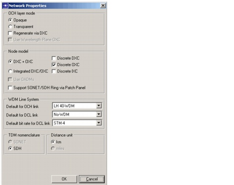

Introduction > Network Properties
Network Properties
The Network Properties dialog box shows a set of specifications that are applicable to the network as a whole. Most of these settings cannot be changed after traffic is routed in the network.
Procedure 1-4 Exploring Network Properties
- Open the WDMGuru_Examples project.
- Select File > Open....
- Select the WDMGuru_Examples project and press Open.
The example project is loaded, containing various scenarios. The Australia scenario is loaded in the workspace.
- Open the Network Properties dialog box.
- Select Network > Network Properties... (or right-click on the workspace and select Network Properties or double click on the workspace).

- Explore the network properties:
- OCH Layer Mode refers to the optical layer architecture. You can select Opaque or Transparent. This tutorial focuses on the opaque mode.
- Node model refers to the model used for DXC (digital cross-connect) and OXC (optical cross-connect) equipment in the EOCC nodes (switching at both DCL and OCH layers). Selecting Integrated DXC/OXC directs SP Guru Transport Planner to use a single integrated electrical switch that implements both DXC and OXC functions. This integrated switch interfaces with SONET/ SDH line cards and with DWDM line systems. These node models can be either discrete or continuous. Using discrete node models, you can specify different types of nodes (e.g., DXCs), each with a different capacity and cost (see Equipment Properties). Using continuous node models, you use one node type that automatically scales with the required capacity. If the option Use OADMs is selected, all OXCs with a degree lower than 3 (i.e. less than three incident links) are replaced by an OADM. Note that this option is disabled in the example, because there are lit fiber pairs in the network. The option called Support SONET/ SDH Ring via Patch Panel specifies whether SONET/ SDH rings are implemented in the OCH layer using patch panels, or contribute to the OXC size.
- WDM Line System allows you to specify the default type of line system to be deployed for DCL links (links attached to at least one ECC node), and for OCH links (links between EOCCs and OCCs). You can also specify the default bit rate for DCL links.
- The TDM nomenclature option allows you to model the network in terms of SONET or SDH technologies. This can only be specified if traffic has not yet been routed in the network.
- Distance Unit designates the unit of measure for distances in the network; this can only be specified during the creation of a new scenario or project.
- Close the project.
End of Procedure 1-4
| Home © 1987-2007 OPNET Technologies, Inc. All Rights Reserved. This software may be covered by one or more U.S. Patents. See complete patent notice in the Legal Notices section. OPNET Support Center |